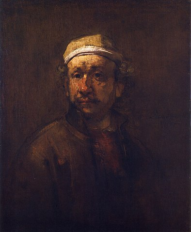

Group Project

Matt was born in Leiden in the Netherlands in 1606. It was during a period known as the Dutch Golden Age. He came from a reasonably wealthy family. His father was a miller and somehow managed to send his son to a Latin school and later the University of Leiden. His education and knowledge of scriptures later proved important when he sought to capture the essence of biblical scenes in his art.